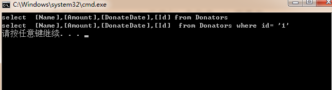

目前有很多开源的ORM项目，大多情况下也不需要我们重复去造轮子，我们只需要了解轮子怎么造的，怎么用就可以，下面简单说一下怎么通过实体生成一个SQL语句；
先建立2个Attribute类，TableAttribute、ColumnAttribute ， 且希望TableAttribute只想标记在实体类上，所以限制 [AttributeUsage(AttributeTargets.Class)]，而希望ColumnAttribute只标记在属性上 [AttributeUsage(AttributeTargets.Property)]
[AttributeUsage(AttributeTargets.Class)]
public class TableAttribute : Attribute
{
private string _TableName = "";
public TableAttribute(string TableName)
{
this._TableName = TableName;
}
public string GetTableName()
{
return this._TableName;
}
} [AttributeUsage(AttributeTargets.Property)]
public class ColumnAttribute:Attribute
{
private string _ColumnName = "";
public ColumnAttribute(string ColumnName)
{
this._ColumnName = ColumnName;
}
public string GetColumnName()
{
return this._ColumnName;
}
}再做一个静态扩展类，增加2个扩展方法 一个针对类型的、一个针对属性的扩展方法
public static class AttributeExtend
{
public static string GetMappingName<T>(this T t) where T : BaseModel
{
if (t.GetType().IsDefined(typeof(TableAttribute), true))
{
TableAttribute attribute = (TableAttribute)t.GetType().GetCustomAttributes(typeof(TableAttribute), true)[0];
return attribute.GetTableName();
}
else
{
return t.GetType().Name;
}
}
public static string GetMappingName(this PropertyInfo prop)
{
if (prop.IsDefined(typeof(ColumnAttribute), true))
{
ColumnAttribute attribute = (ColumnAttribute)prop.GetCustomAttribute(typeof(ColumnAttribute), true);
return attribute.GetColumnName();
}
else
{
return prop.Name;
}
}
public static string GetMappingName(this Type type)
{
if (type.IsDefined(typeof(TableAttribute), true))
{
TableAttribute attribute = (TableAttribute)type.GetCustomAttribute(typeof(TableAttribute), true);
return attribute.GetTableName();
}
else
{
return type.Name;
}
}
}获取sql语句方法，目前只简单写了查询所有的，及根据ID查询，如果想丰富查询操作需要用到表达式目录树
public class OrmSql
{
public string GetAllSelectSQL<T>() where T :BaseModel
{
Type type = typeof(T);
var props = type.GetProperties();
string columnString = string.Join(",", props.Select(m => $"[{m.GetMappingName()}]"));
string SelectSQL = $"select {columnString} from {type.GetMappingName()}";
return SelectSQL;
}
public string GetSelectSQLByID<T>(T t) where T :BaseModel
{
Type type = typeof(T);
var props = type.GetProperties();
string columnString = string.Join(",", props.Select(m => $"[{m.GetMappingName()}]"));
string SelectSQL = $"select {columnString} from {type.GetMappingName()} where id= '{t.Id}'";
return SelectSQL;
}
}调用方法
public class Program
{
public static void Main(string[] args)
{
OrmSql orm = new OrmSql();
Console.WriteLine(orm.GetAllSelectSQL<Donator>() );
Console.WriteLine(orm.GetSelectSQLByID<Donator>(new Donator() { Id=1}) );
}
}运行截图：
